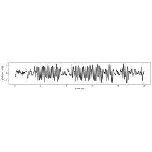

Tutorials¶
Below is a series of notebooks that provide an introduction to cycle-by-cycle analysis.



3. Cycle-by-cycle analysis of resting state data
3. Cycle-by-cycle analysis of resting state data

5. Running Bycycle on 3D Arrays
5. Running Bycycle on 3D Arrays